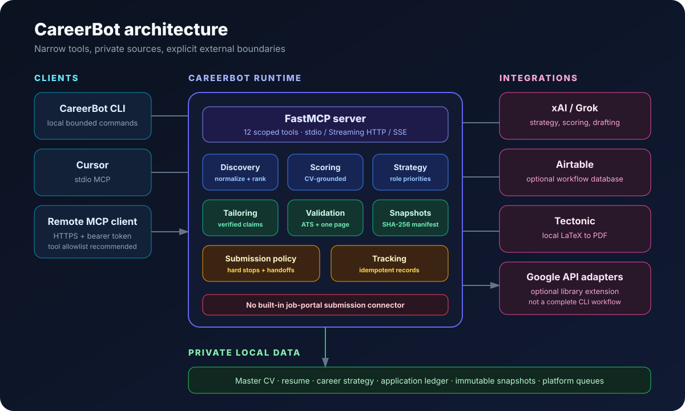
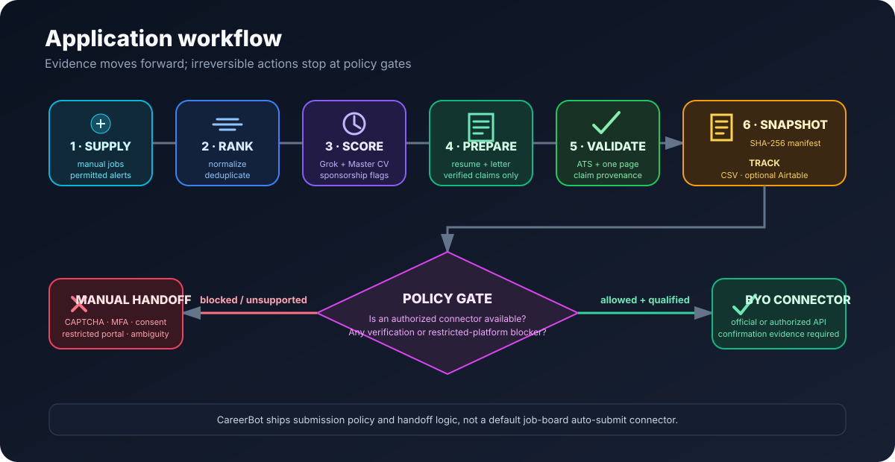
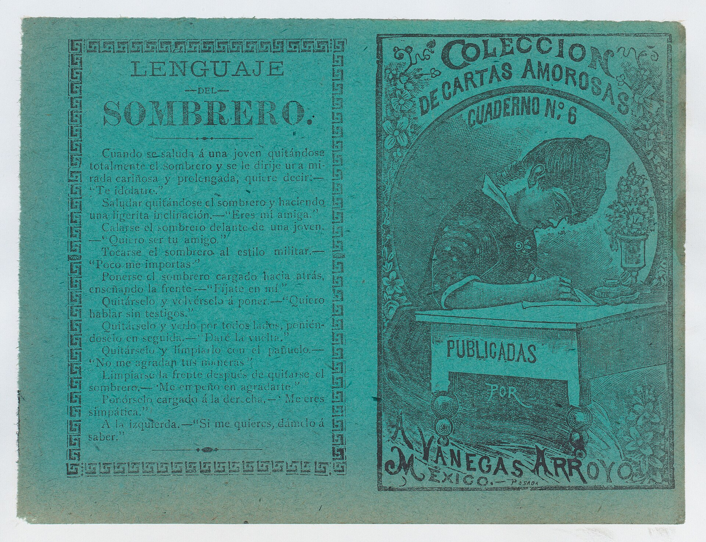

Bounded prep.
Auditable.
CareerBot scores job fit, prepares verified application artifacts, preserves immutable snapshots, and stops at the boundaries that need a human.
Verified claims only · Bounded sessions · Human approval gates
From input to a review‑ready package.
Each module does one job and leaves behind inspectable state, so a workflow can stop, resume, or hand control back without losing context.
-
Normalize and rank
Deduplicate supplied jobs and prioritize the bounded input set before model calls.
-
Score against evidence
Compare requirements with a private, hash‑verified Master CV using xAI.
-
Prepare artifacts
Draft positioning, LaTeX resumes, and concise letters from verified facts.
-
Preserve snapshots
Save immutable packages with file sizes and SHA‑256 manifests.
-
Track without guessing
Record prepared/submitted state locally, with optional Airtable tracking.
Narrow tools. Clear bounds.
Use the CLI directly, connect Cursor over stdio MCP, or expose a protected remote endpoint through your own infrastructure.

Automation has boundaries.
The project ships preparation, policy assessment, and handoff logic—not a default job-board auto-submit connector.
- No hidden experience. Generated claims stay inside verified CV evidence.
- No bypasses. CAPTCHA, MFA, identity, consent, and declarations require a handoff.
- No unbounded runs. Job, application, and elapsed‑time limits are configurable.

Works in MCP.
Twelve scoped tools cover strategy, discovery, scoring, artifact generation, snapshots, tracking, and submission policy.
Read the MCP setup- consult_career_positioning
- save_career_strategy
- get_career_strategy
- search_jobs
- score_job
- tailor_resume
- generate_cover_letter
- save_application_snapshot
- verify_snapshot
- track_application
- submission_hard_stops
- assess_submission
Work in the open. Keep a record.
Real pictures of the craft around applications — letters, desks, and the tools of writing.

Clone it. Keep your private data private.
Start with fictional inputs and a dry-run profile. Private resumes, credentials, application records, and snapshots remain in ignored local paths.
- Clone the repository. Get the code directly from GitHub.
- Install dependencies. Use uv with Python 3.12 or newer.
- Create private files. Copy the safe examples and replace verified placeholders.
- Run locally. Inspect the CLI before adding external integrations.
# Clone CareerBot
git clone https://github.com/Sai21112000/CareerBot.git
cd CareerBot
# Install and create private configuration
uv sync --extra dev
cp .env.example .env
cp AGENTS.md.example AGENTS.md
cp data/master_resume.tex.example data/master_resume.tex
# Inspect the local CLI
uv run careerbot --helpOpen source. Ready to clone.
git clone …/CareerBot.git